Data Vis Chapter 8
head(asasec)## Section Sname Beginning Revenues
## 1 Aging and the Life Course (018) Aging 12752 12104
## 2 Alcohol, Drugs and Tobacco (030) Alcohol/Drugs 11933 1144
## 3 Altruism and Social Solidarity (047) Altruism 1139 1862
## 4 Animals and Society (042) Animals 473 820
## 5 Asia/Asian America (024) Asia 9056 2116
## 6 Body and Embodiment (048) Body 3408 1618
## Expenses Ending Journal Year Members
## 1 12007 12849 No 2005 598
## 2 400 12677 No 2005 301
## 3 1875 1126 No 2005 NA
## 4 1116 177 No 2005 209
## 5 1710 9462 No 2005 365
## 6 1920 3106 No 2005 NAp <-
ggplot(
data = subset(asasec, Year == 2014),
mapping = aes(x = Members,
y = Revenues, label = Sname)
)
p + geom_point() + geom_smooth()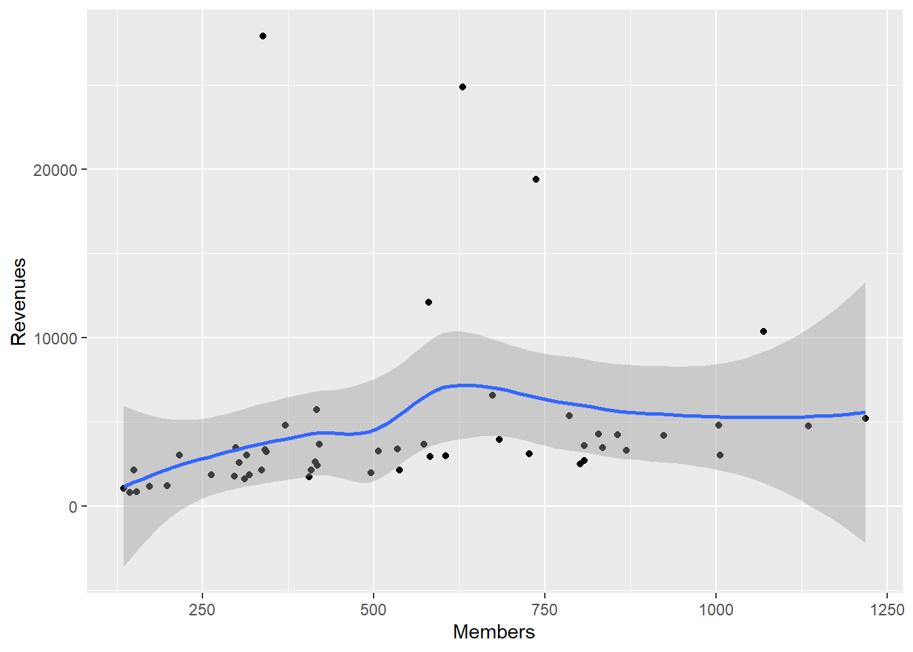
p <-
ggplot(
data = subset(asasec, Year == 2014),
mapping = aes(x = Members,
y = Revenues, label = Sname)
)
p + geom_point(mapping = aes(color = Journal)) + geom_smooth(method = "lm")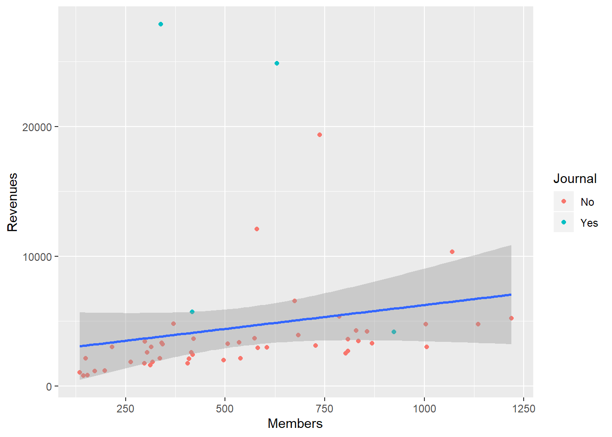
p0 <-
ggplot(
data = subset(asasec, Year == 2014),
mapping = aes(x = Members,
y = Revenues, label = Sname)
)
p1 <-
p0 + geom_smooth(method = "lm", se = FALSE, color = "gray80") +
geom_point(mapping = aes(color = Journal))
library(ggrepel)
p2 <- p1 + geom_text_repel(data = subset(asasec, Year == 2014 &
Revenues > 7000),
size = 2)p3 <- p2 + labs(
x = "Membership",
y = "Revenues",
color = "Section has own Journal",
title = "ASA Sections",
subtitle = "2014 Calendar year.",
caption = "Source: ASA annual report."
)
p4 <- p3 + scale_y_continuous(labels = scales::dollar) +
theme(legend.position = "bottom")
p4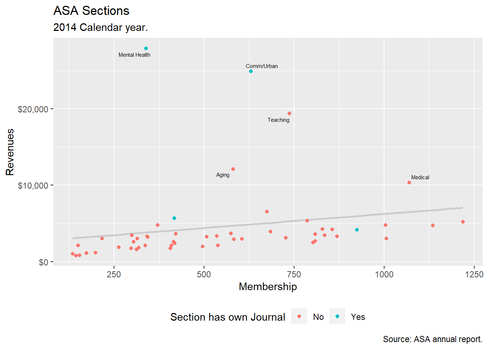
Use Color Palette
Use the RColorBrewer package. Access the colors by specifying the scale_color_brewer() or scale_fill_brewer() functions, depending on the aesthetic you are mapping.
p <- ggplot(data = organdata,
mapping = aes(x = roads, y = donors,
color = world))
p + geom_point(size = 2) + scale_color_brewer(palette = "Set2") +
theme(legend.position = "top")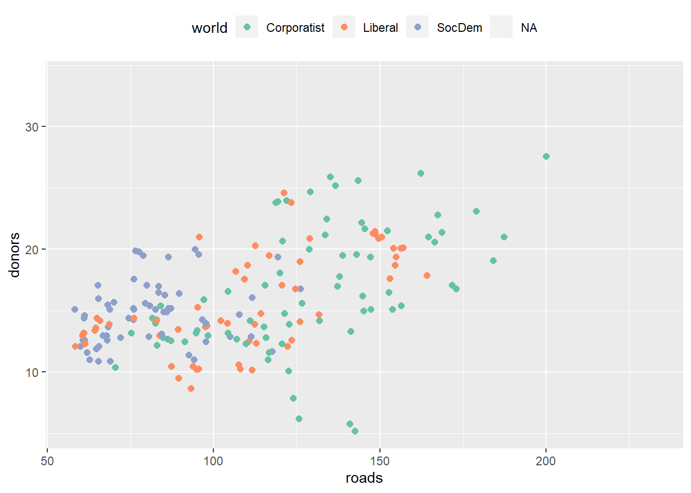
p + geom_point(size = 2) + scale_color_brewer(palette = "Pastel2") +
theme(legend.position = "top")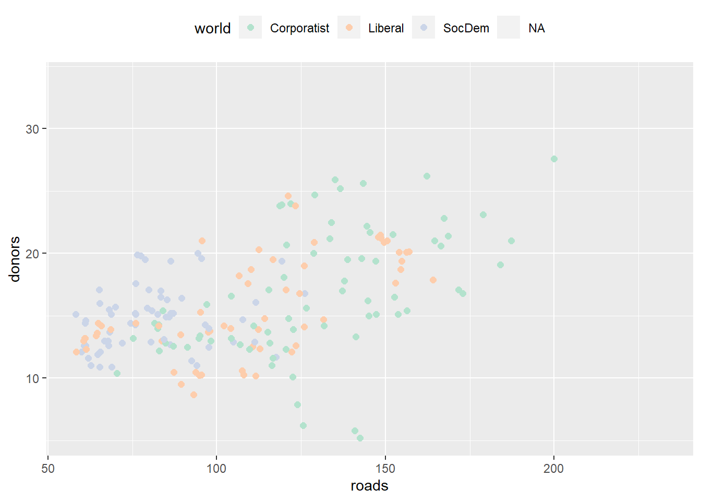
p + geom_point(size = 2) + scale_color_brewer(palette = "Dark2") +
theme(legend.position = "top")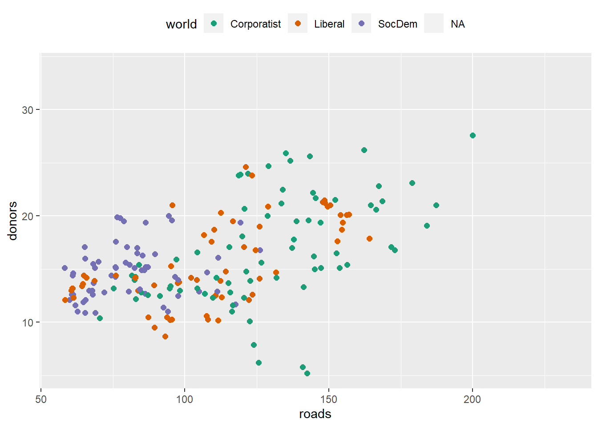
Specify colors manually, via scale_color_manual() or scale_fill_manual(). Try demo('color') to see the color names in R.
cb_palette <-
c(
"#999999",
"#E69F00",
"#56B4E9",
"#009E73",
"#F0E442",
"#0072B2",
"#D55E00",
"#CC79A7"
)
p4 + scale_color_manual(values = cb_palette)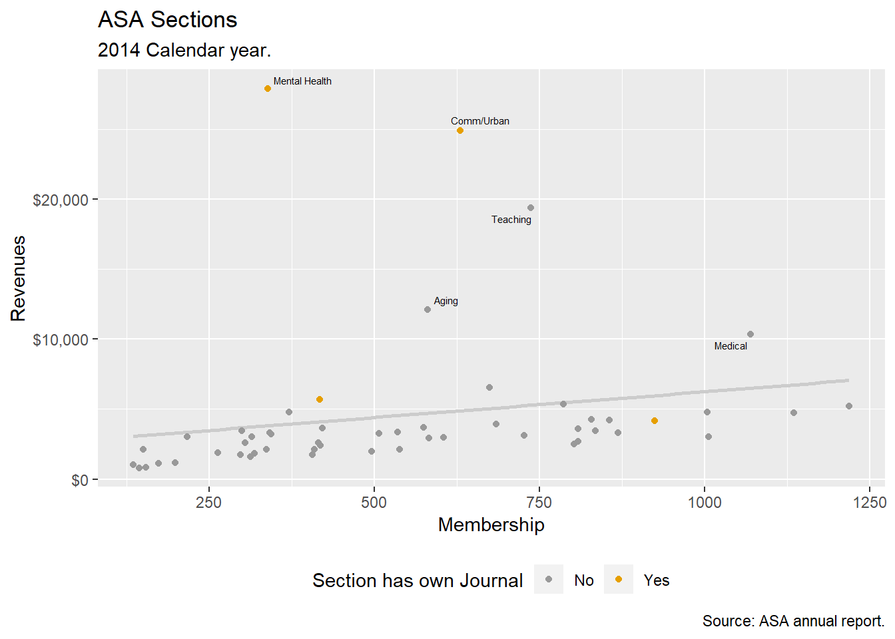
library(dichromat)
library(RColorBrewer)
Default <- brewer.pal(5, "Set2")
types <- c("deutan", "protan", "tritan")
names(types) <- c("Deuteronopia", "Protanopia", "Tritanopia")
color_table <- types %>% purrr::map(~ dichromat(Default, .x)) %>%
as_tibble() %>% add_column(Default, .before = TRUE)
color_table## # A tibble: 5 x 4
## Default Deuteronopia Protanopia Tritanopia
## <chr> <chr> <chr> <chr>
## 1 #66C2A5 #AEAEA7 #BABAA5 #82BDBD
## 2 #FC8D62 #B6B661 #9E9E63 #F29494
## 3 #8DA0CB #9C9CCB #9E9ECB #92ABAB
## 4 #E78AC3 #ACACC1 #9898C3 #DA9C9C
## 5 #A6D854 #CACA5E #D3D355 #B6C8C8Layer Color and Text Together
# Democrat Blue and Republican Red party_colors ← c("#2E74C0", "#CB454A")
p0 <- ggplot(
data = subset(county_data, flipped == "No"),
mapping = aes(x = pop, y = black / 100)
)
p1 <-
p0 + geom_point(alpha = 0.15, color = "gray50") + scale_x_log10(labels =
scales::comma)
p1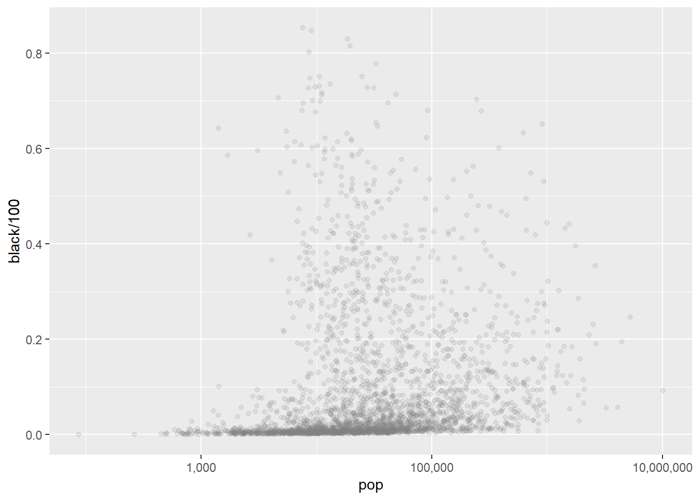
party_colors <- c("#2E74C0", "#CB454A")
p2 <- p1 + geom_point(
data = subset(county_data, flipped == "Yes"),
mapping = aes(x = pop, y = black / 100, color = partywinner16)
) +
scale_color_manual(values = party_colors)
p2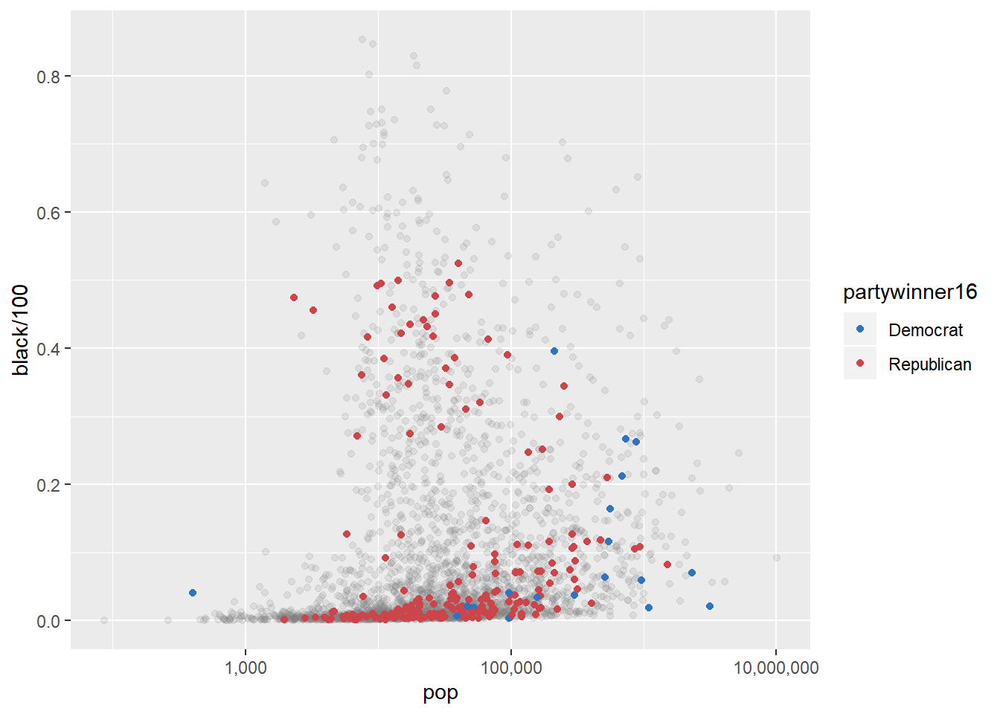
p3 <-
p2 + scale_y_continuous(labels = scales::percent) + labs(
color = "County flipped to ... ",
x = "County Population (log scale)",
y = "Percent Black Population",
title = "Flipped counties, 2016",
caption = "Counties in gray did not flip."
)
p3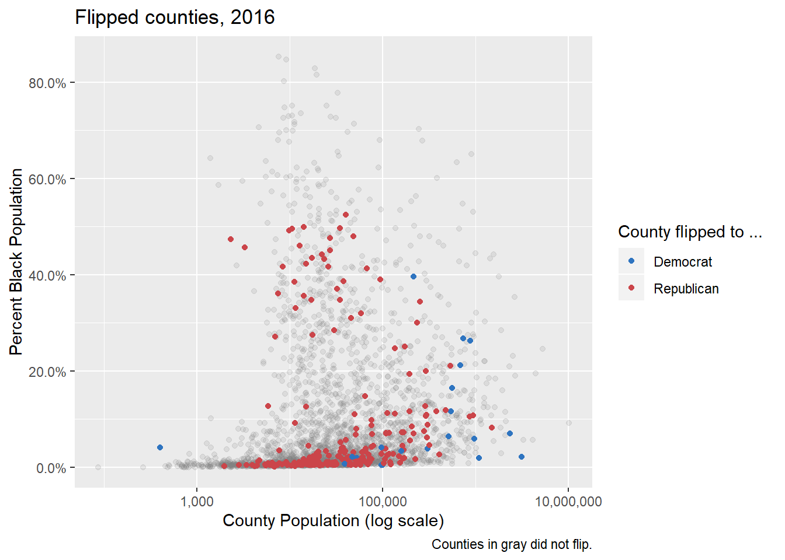
p4 <-
p3 + geom_text_repel(
data = subset(county_data, flipped == "Yes" & black > 25),
mapping = aes(x = pop, y = black / 100, label = state),
size = 2
)
p4 + theme_minimal() + theme(legend.position = "top")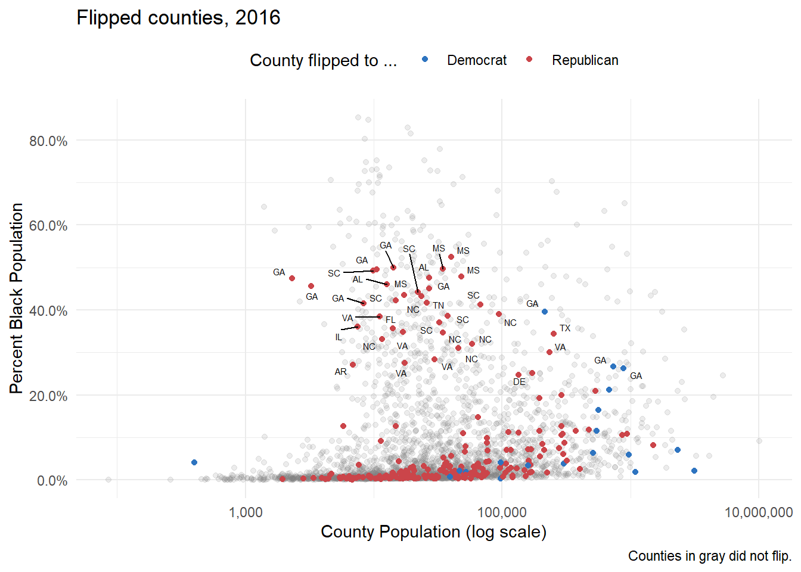
Themes
theme_set(theme_bw())
p4 + theme(legend.position = "top")theme_set(theme_dark())
p4 + theme(legend.position = "top")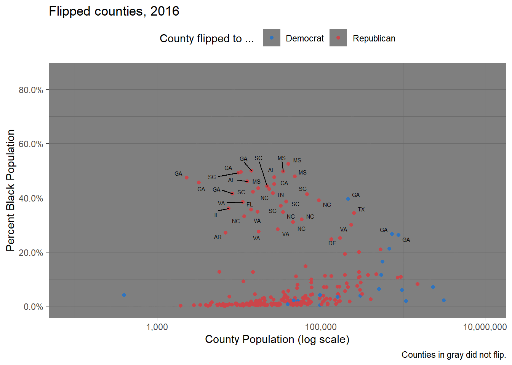
p4 + theme_gray()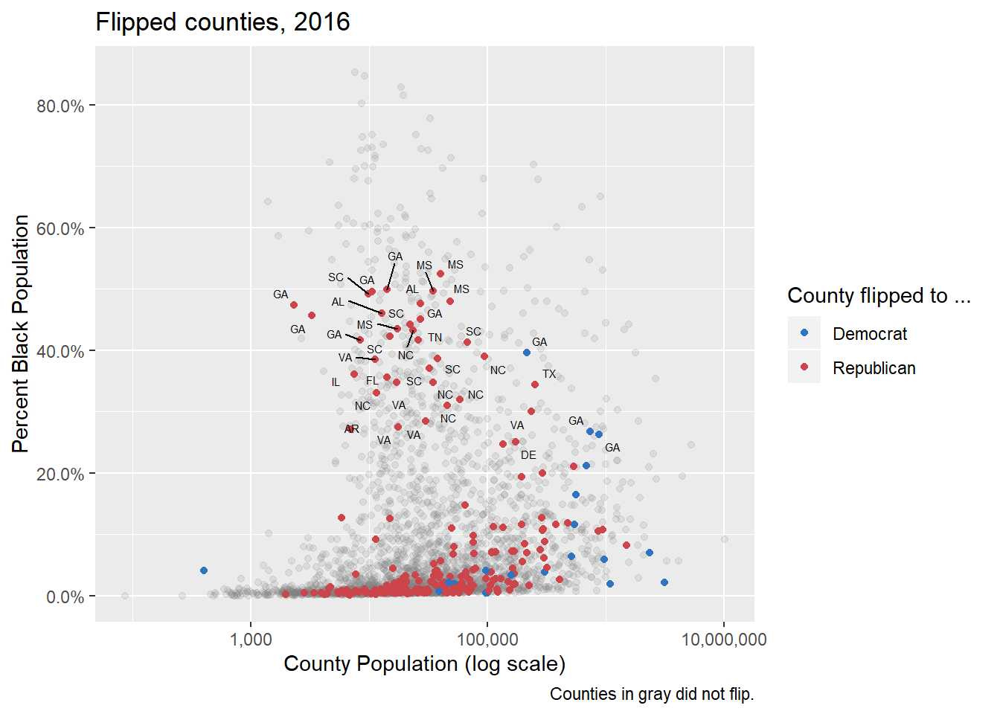
library(ggthemes)
theme_set(theme_economist())
p4 + theme(legend.position = "top")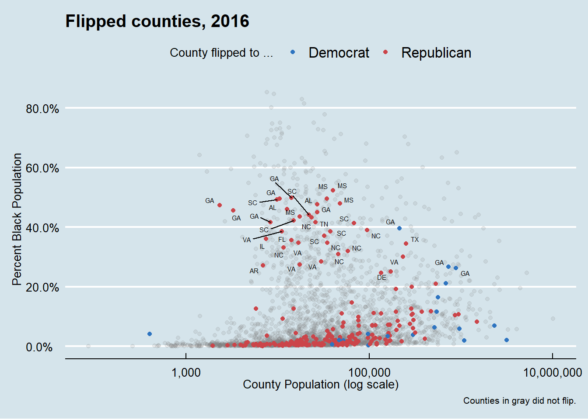
theme_set(theme_wsj())
p4 + theme(
plot.title = element_text(size = rel(0.6)),
legend.title = element_text(size = rel(0.35)),
plot.caption = element_text(size = rel(0.35)),
legend.position = "top"
)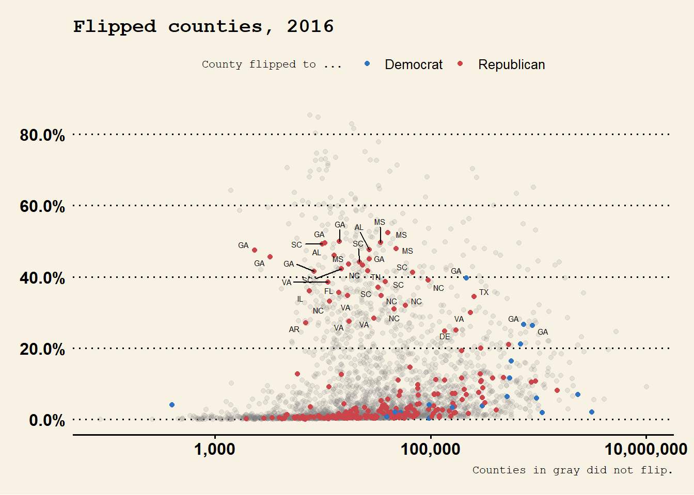
Claus O. Wilke’s cowplot package, contains a well-developed theme suitable for figures whose final destination is a journal article. BobRudis’s hrbrthemes package, has a distinctive and compact look and feel that takes advantage of some freely available typefaces.
library(hrbrthemes)
theme_set(theme_ipsum())
p4 + theme(legend.position = "top")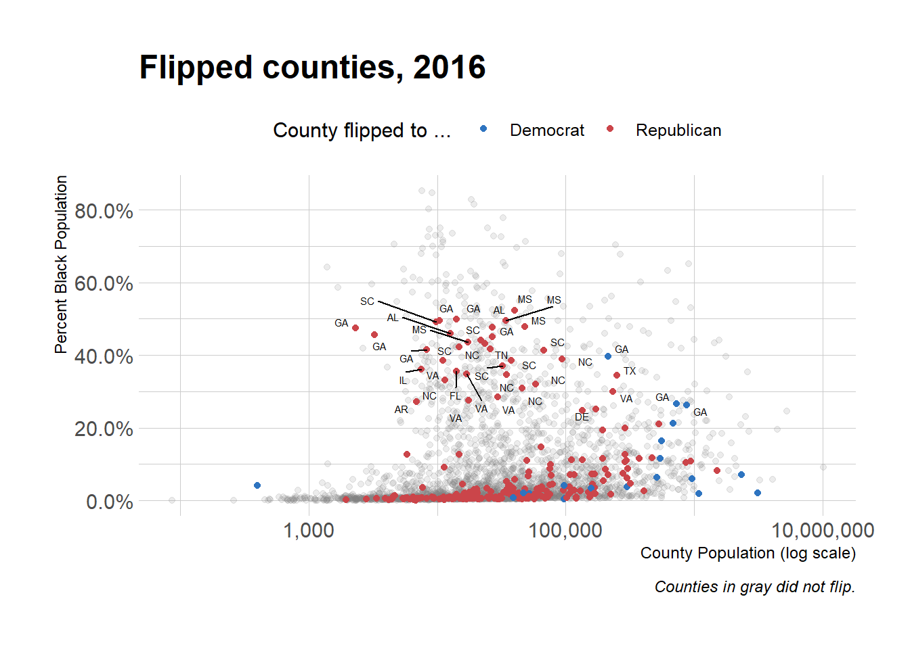
p4 + theme(
legend.position = "top",
plot.title = element_text(
size = rel(2),
lineheight = .5,
family = "Times",
face = "bold.italic",
colour = "orange"
),
axis.text.x = element_text(
size = rel(1.1),
family = "Courier",
face = "bold",
color = "purple"
)
)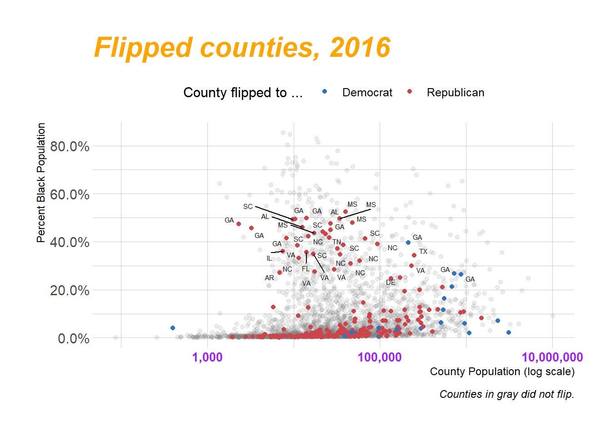
Use Theme Elements
yrs <- c(seq(1972, 1988, 4), 1993, seq(1996, 2016, 4))
mean_age <-
gss_lon %>% filter(age %nin% NA &&
year %in% yrs) %>% group_by(year) %>% summarize(xbar = round(mean(age, na.rm = TRUE), 0))
mean_age$y <- 0.3
yr_labs <- data.frame(x = 85, y = 0.8, year = yrs)p <-
ggplot(data = subset(gss_lon, year %in% yrs),
mapping = aes(x = age))
p1 <-
p + geom_density(
fill = "gray20",
color = FALSE,
alpha = 0.9,
mapping = aes(y = ..scaled..)
) +
geom_vline(
data = subset(mean_age, year %in% yrs),
aes(xintercept = xbar),
color = "white",
size = 0.5
) +
geom_text(
data = subset(mean_age, year %in% yrs),
aes(x = xbar, y = y, label = xbar),
nudge_x = 7.5,
color = "white",
size = 3.5,
hjust = 1
) +
geom_text(data = subset(yr_labs, year %in% yrs), aes(x = x, y = y, label = year)) +
facet_grid(year ~ ., switch = "y")p1 +
theme(
plot.title = element_text(size = 16),
axis.text.x = element_text(size = 12),
axis.title.y = element_blank(),
axis.text.y = element_blank(),
axis.ticks.y = element_blank(),
strip.background = element_blank(),
strip.text.y = element_blank(),
panel.grid.major = element_blank(),
panel.grid.minor = element_blank()
) +
labs(x = "Age", y = NULL, title = "Age Distribution of\nGSS Respondents")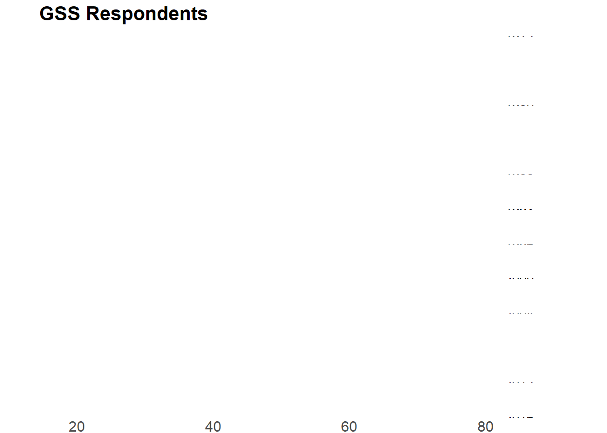
library(ggridges)
p <-
ggplot(data = gss_lon, mapping = aes(x = age, y = factor(
year, levels = rev(unique(year)), ordered = TRUE
)))
p + geom_density_ridges(alpha = 0.6,
fill = "lightblue",
scale = 1.5) + scale_x_continuous(breaks = c(25, 50, 75)) + scale_y_discrete(expand = c(0.01, 0)) + labs(x = "Age", y = NULL, title = "Age Distribution of\nGSS Respondents") +
theme_ridges() + theme(title = element_text(size = 16, face = "bold"))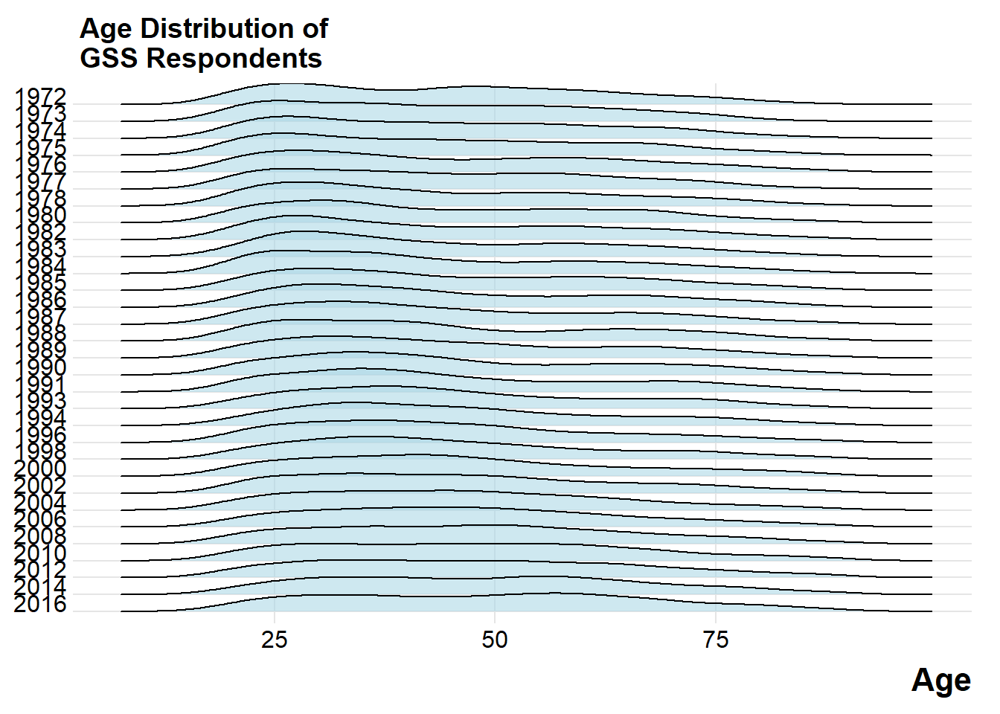
Two y-axes
head(fredts)## date sp500 monbase sp500_i monbase_i
## 1 2009-03-11 696.68 1542228 100.0000 100.0000
## 2 2009-03-18 766.73 1693133 110.0548 109.7849
## 3 2009-03-25 799.10 1693133 114.7012 109.7849
## 4 2009-04-01 809.06 1733017 116.1308 112.3710
## 5 2009-04-08 830.61 1733017 119.2240 112.3710
## 6 2009-04-15 852.21 1789878 122.3245 116.0579fredts_m <-
fredts %>% select(date, sp500_i, monbase_i) %>% gather(key = series, value = score, sp500_i:monbase_i)
head(fredts_m)## date series score
## 1 2009-03-11 sp500_i 100.0000
## 2 2009-03-18 sp500_i 110.0548
## 3 2009-03-25 sp500_i 114.7012
## 4 2009-04-01 sp500_i 116.1308
## 5 2009-04-08 sp500_i 119.2240
## 6 2009-04-15 sp500_i 122.3245p <-
ggplot(data = fredts_m,
mapping = aes(
x = date,
y = score,
group = series,
color = series
))
p1 <-
p + geom_line() + theme(legend.position = "top") + labs(x = "Date", y = "Index", color = "Series")
p <-
ggplot(data = fredts,
mapping = aes(x = date, y = sp500_i - monbase_i))
p2 <- p + geom_line() + labs(x = "Date", y = "Difference")cowplot::plot_grid(p1, p2, nrow = 2, rel_heights = c(0.75, 0.25), align = "v")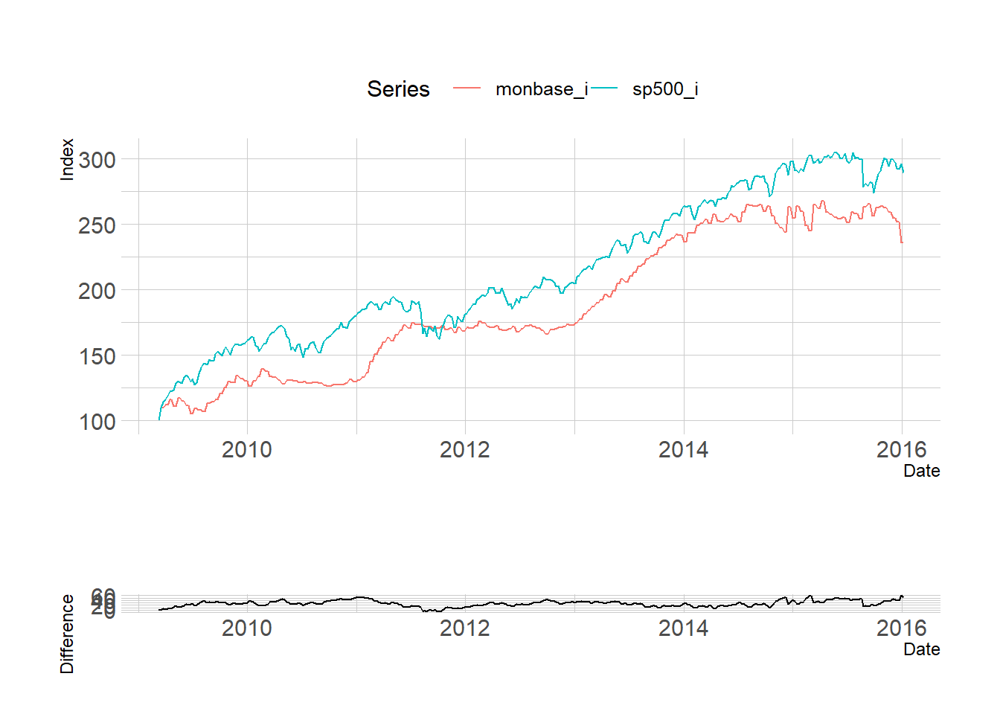 Using two y-axes gives you an extra degree of freedom to mess about with the data that, in most cases, you really should not take advantage of.
p <- ggplot(data = yahoo, mapping = aes(x = Employees, y = Revenue))
p + geom_path(color = "gray80") + geom_text(aes(color = Mayer, label = Year),
size = 3,
fontface = "bold") +
theme(legend.position = "bottom") + labs(
color = "Mayer is CEO",
x = "Employees",
y = "Revenue (Millions)",
title = "Yahoo Employees vs Revenues, 2004-2014"
) + scale_y_continuous(labels = scales::dollar) + scale_x_continuous(labels = scales::comma)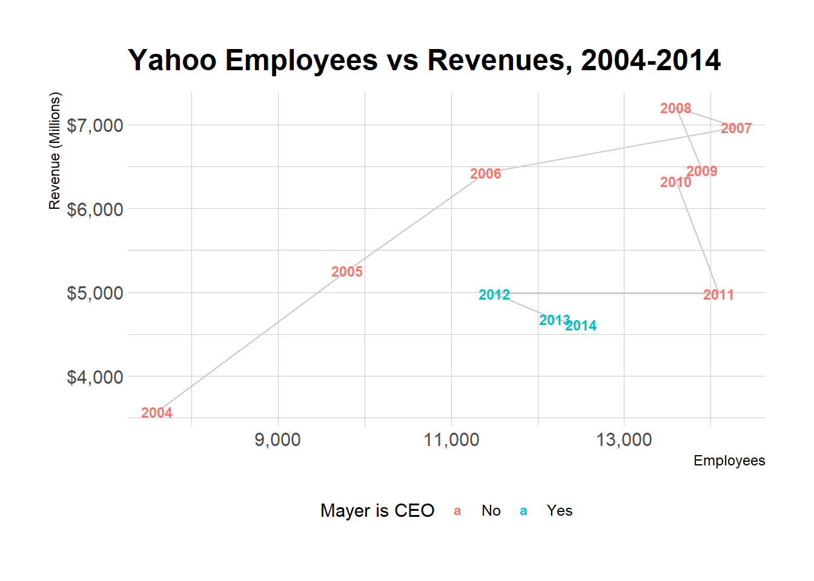
p <-
ggplot(data = yahoo,
mapping = aes(x = Year, y = Revenue / Employees))
p + geom_vline(xintercept = 2012) + geom_line(color = "gray60", size = 2) + annotate(
"text",
x = 2013,
y = 0.44,
label = " Mayer becomes CEO",
size = 2.5
) +
labs(x = "Year\n", y = "Revenue/Employees", title = "Yahoo Revenue to Employee Ratio, 2004-2014")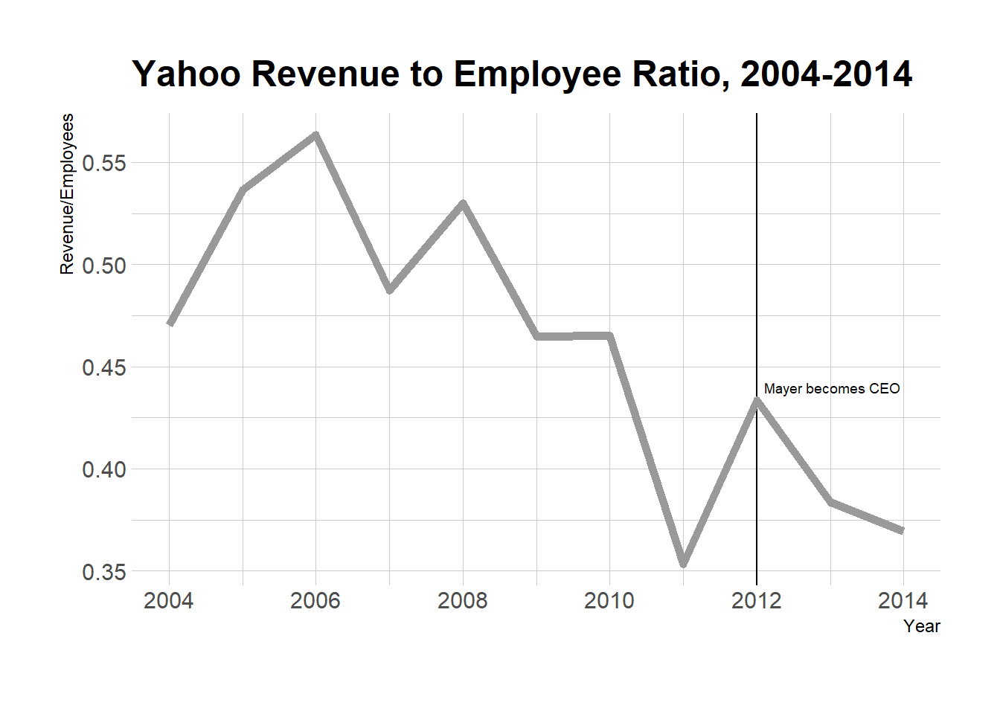
Saying no to pie
p_xlab <-
"Amount Owed, in thousands of Dollars"
p_title <- "Outstanding Student Loans"
p_subtitle <- "44 million borrowers owe a total of $1.3 trillion"
p_caption <- "Source: FRB NY"
f_labs <-
c(`Borrowers` = "Percent of\nall Borrowers", `Balances` = "Percent of\nall Balances")
p <-
ggplot(data = studebt,
mapping = aes(x = Debt, y = pct / 100, fill = type))
p + geom_bar(stat = "identity") + scale_fill_brewer(type = "qual", palette = "Dark2") + scale_y_continuous(labels = scales::percent) + guides(fill = FALSE) + theme(strip.text.x = element_text(face = "bold")) + labs(
y = NULL,
x = p_xlab,
caption = p_caption,
title = p_title,
subtitle = p_subtitle
) + facet_grid( ~ type, labeller = as_labeller(f_labs)) + coord_flip()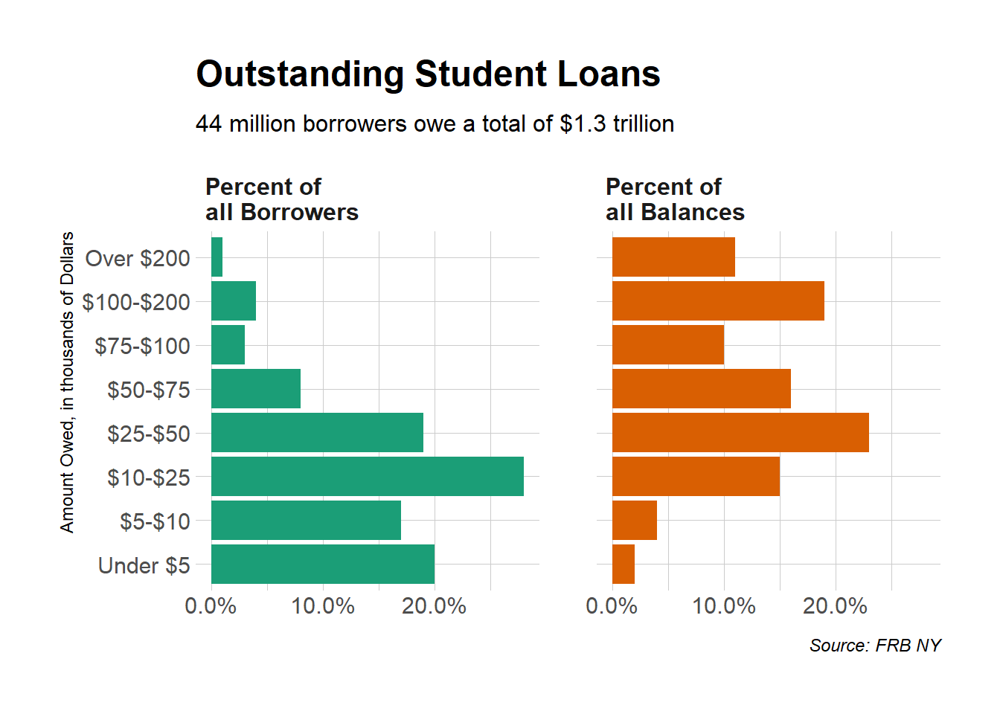
library(viridis)
p <-
ggplot(studebt, aes(y = pct / 100, x = type, fill = Debtrc))
p + geom_bar(stat = "identity", color = "gray80") + scale_x_discrete(labels = as_labeller(f_labs)) + scale_y_continuous(labels = scales::percent) + scale_fill_viridis(discrete = TRUE) + guides(
fill = guide_legend(
reverse = TRUE,
title.position = "top",
label.position = "bottom",
keywidth = 3,
nrow = 1
)
) +
labs(
x = NULL,
y = NULL,
fill = "Amount Owed, in thousands of dollars",
caption = p_caption,
title = p_title,
subtitle = p_subtitle
) +
theme(
legend.position = "top",
axis.text.y = element_text(face = "bold", hjust = 1, size = 12),
axis.ticks.length = unit(0, "cm"),
panel.grid.major.y = element_blank()
) +
coord_flip()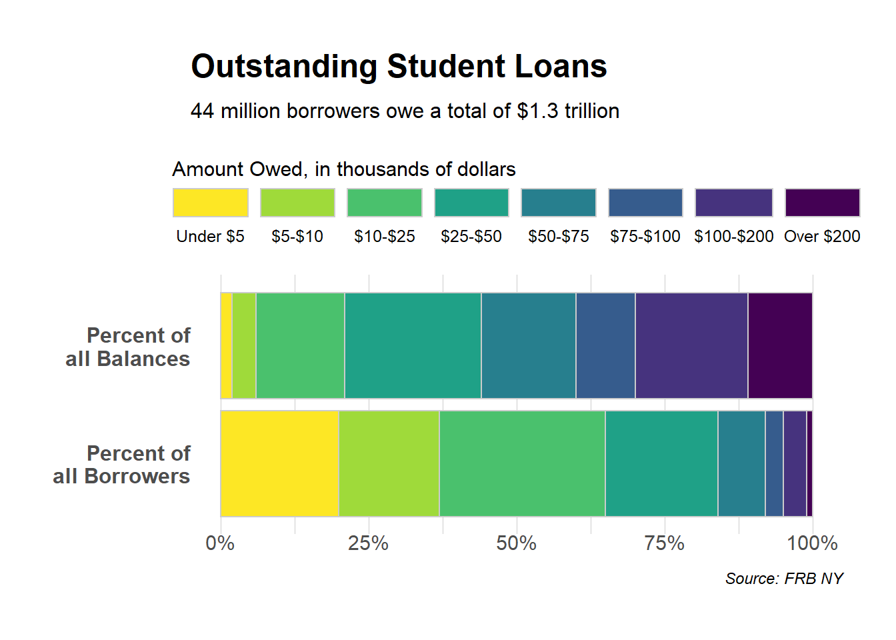
http://r-graph-gallery.com/ for more examples
Yihong WANG
Wayfaring Stranger